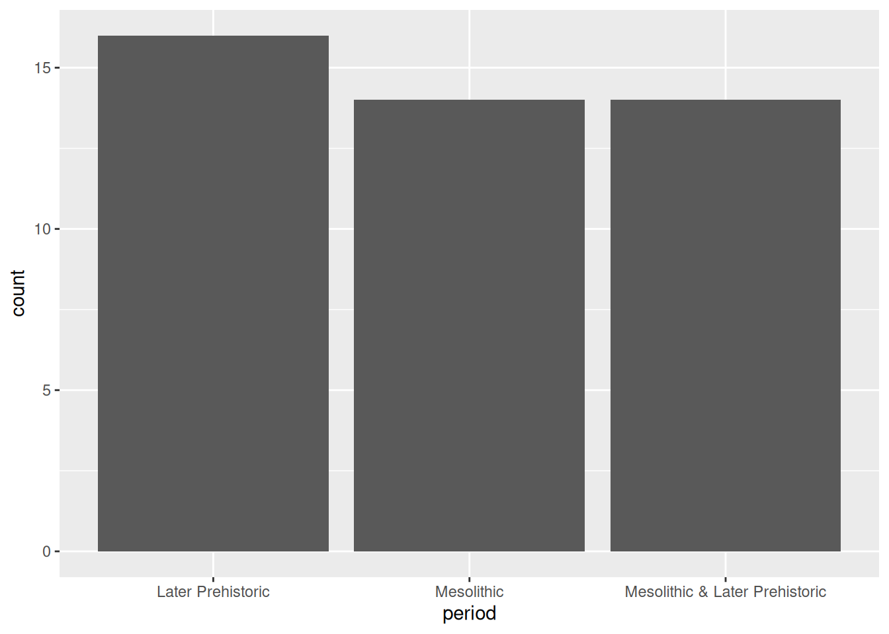
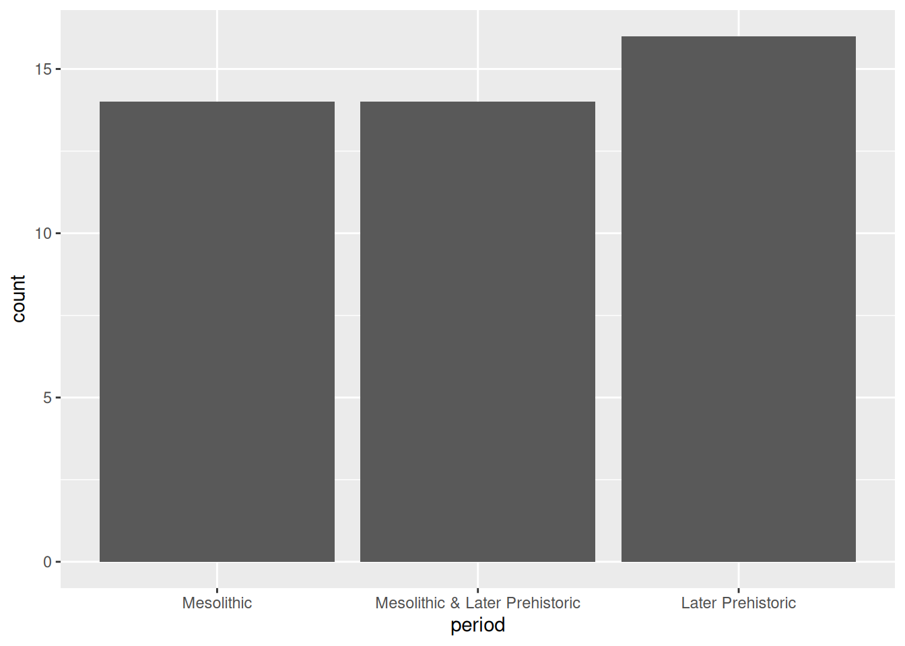
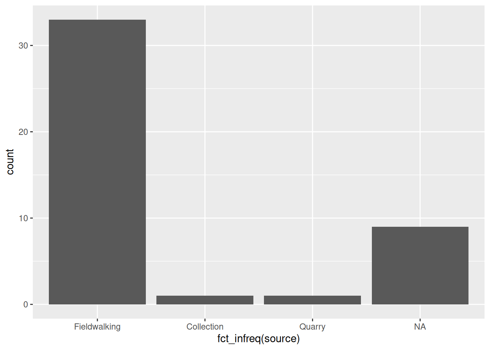
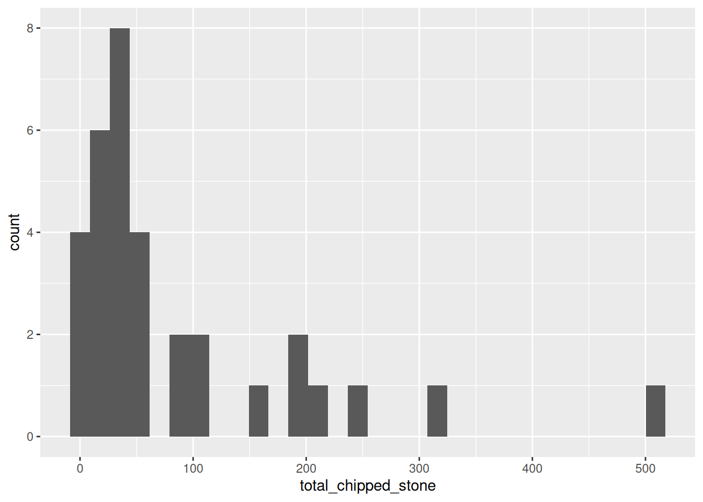
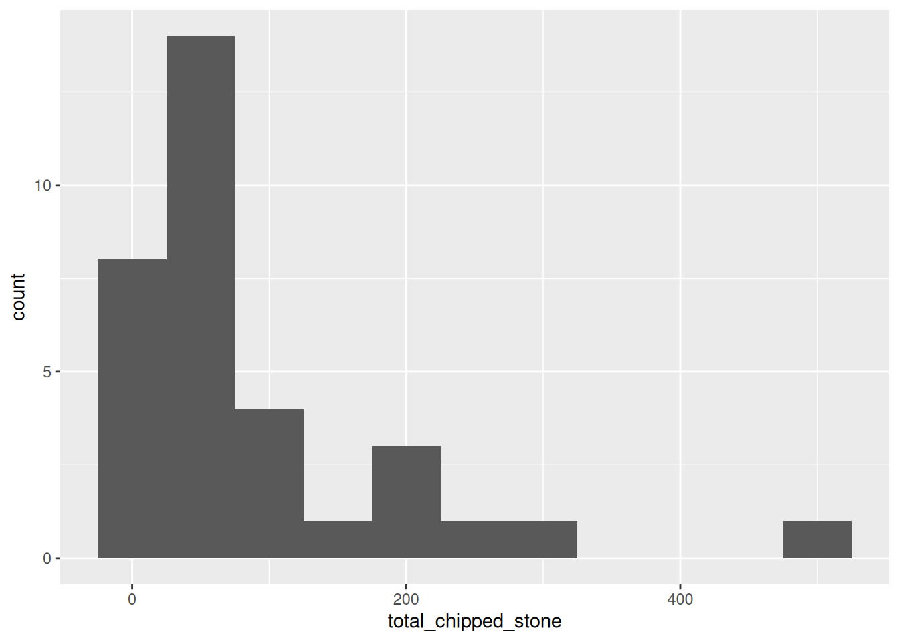
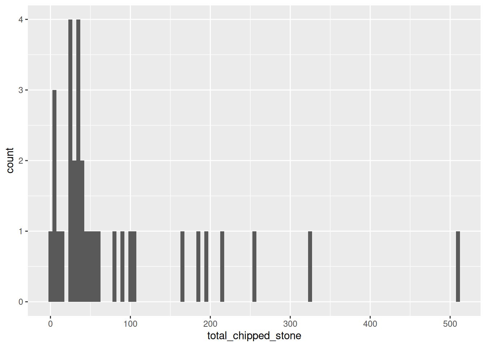
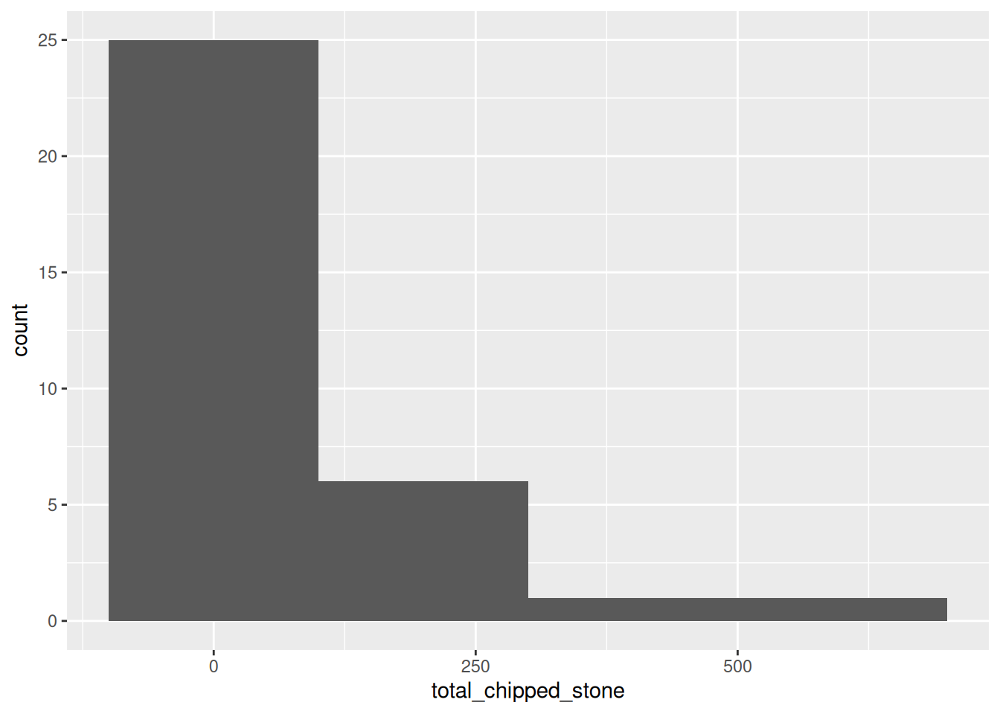

library(islay)
data(islay_sites)Visualising distributions
This tutorial is the first of two covering visualisations as a tool for exploratory data analysis. It introduces the package ggplot2, which provides a flexible ‘grammar of graphics’ for visualising data in R.
This tutorial focuses on visualising the distribution of data using bar plots, histograms, and density plots.
Prerequisites
- Hadley Wickham, The Role of Visualization in Exploratory Data Analysis (video)
If you haven’t already, install the ggplot2 and islay packages. To install islay you will first need to install devtools; Windows users will additionally need RTools.
Objectives
By the end of this tutorial you should:
- Be able to generate questions about the distribution of a variable
- Understand the structure of the ‘grammar of graphics’
- Know how to produce bar plots, box plots, histograms, and density plots in R using ggplot2
Exploring data – generating questions
EDA is fundamentally a process of asking questions of data. By generating a large number of questions, which explore different facets of different variables in our dataset, we hope to narrow down on the subset of questions that are interesting or reveal interesting patterns. At this point we don’t mean archaeological questions, but statistical ones:
- What variables are in my dataset?
- What type of variable are they?
- What variation is there in individual variables (what is their distribution)?
- What variation is there between individual variables (what is their relationship)?
Today we will begin exploring the first three types of questions with the islay_sites dataset from the islay package. You can load it into R like so:
This is a data frame, an import type of object in R that collects multiple vectors (of different types) into a table.
Exercises
- How many sites are there in the
islay_sitesdataset? - What information is recorded about sites in the
islay_sitesdataset?
Types of variable
In statistics, we break down variables (measurements of a particular quality of a thing) into two basic types: categorical variables are those that can be one of a fixed set of choices (like the colour of an object); numerical variables can take any of a range of values that can be interpreted as numbers (like the length of an object).
These are further divided into two sub-types each. Categorical variables can be nominal, in which the values are arbitrary (like colours), or ordinal, where they can be arranged in a sequence (like opinion, disagree – agree – strongly agree, etc.). Numerical variables can be discrete (whole numbers, typically from counts) or continuous (real numbers, typically from measurements).
Exercises
- Give an archaeological example of a nominal categorical variable, an ordinal categorical variable, a continuous numerical variable, a discrete numerical variable.
- Which of the six data types could be used to represent each of these statistical types in R?
- What type of variable is each column of
islay_sites?
The Grammar of Graphics
If you haven’t already, follow sections 2.1 and 2.2 in R for Data Science (2nd edition), for an introduction to plotting with ggplot2.
Bar plots
The distribution of categorical variable is almost best visualised using a bar plot.
Bar plots are created in ggplot2 using the geom_bar geometry. If we give this only one aesthetic, it will default to plotting the frequency of each category – that is, how many rows there are with each unique value. For example, using the islay_sites dataset from islay, we could plot the number of sites assigned to each period:
library(ggplot2)
ggplot(islay_sites, aes(period)) +
geom_bar()
Notice that the default order of the x axis is alphabetical. You’ll usually want to change this to something meaningful: in this case, the periods form a sequence and thus have a natural order. To reorder a categorical axis in ggplot2, you have to transform the variable used to generate it into a factor. To do this we can use the factor() function, specifying the possible levels (periods), in order. We’ll want to use this order every time we plot by period, so we’ll assign the newly created factor back to the period column of our data frame.
periods <- c("Mesolithic", "Mesolithic & Later Prehistoric", "Later Prehistoric")
islay_sites$period <- factor(islay_sites$period, periods)
ggplot(islay_sites, aes(period)) +
geom_bar()
Factors
Factors are how R represents categorical values with a known set of possible values or levels. They are especially useful when the levels are ordered because it provides a way to encode the order into the object itself, which is then automatically picked up by ggplot2 and other packages. The forcats package has a number of useful tools for working with factors, and its cheatsheet is well worth a look.
If what you’re plotting doesn’t have an intrinsic order—the source of information about our sites, for example—a good rule of thumb is to order the bars by size. We can do this easily using fct_infreq() from forcats:
library(forcats)
ggplot(islay_sites, aes(fct_infreq(source))) +
geom_bar()
Notice that it automatically places NA values at the end, even though this is the second-largest category.
Exercises
- What can we say about the distribution of sites by period on Islay?
- What difference does it make that
fct_infreq()inside theggplot()call in the sources plot, butfactor()is outside of it in the periods plot?
Histograms & density plots
The most common way of visualising a numerical variable is a histogram. Visually similar to a bar plot, a histogram sorts each case of the variable into one of a number of equally-spaced bins, and then draws bars corresponding to the frequency of each bin. Histograms are created in ggplot2 using the geom_histogram() geometry which, like geom_bar, only requires one aesthetic. We could use a histogram to visualise the distribution of chipped stone artefacts across the sites on Islay:
ggplot(islay_sites, aes(total_chipped_stone)) +
geom_histogram()
You will receive two warnings when generating this plot:
`stat_bin()` using `bins = 30`. Pick better value with `binwidth`.
Warning: Removed 11 rows containing non-finite values (`stat_bin()`).The second warning means that 11 sites with an NA value in the total_chipped_stone column have been removed from the plot. We can safely ignore this, because it is what we want to happen.
The first warning tells us that ggplot has automatically chosen how many bins it should plot (30) and advises us to set a ‘better’ value explicitly. But what is a ‘better’ value? Let’s take a guess and try bin_width = 50 to start with (meaning that the first bin will be 0 to 50, then 50 to 100, etc.):
ggplot(islay_sites, aes(total_chipped_stone)) +
geom_histogram(binwidth = 50)
This looks reasonable, but the pattern is rather different from the first plot. Let’s try with a very small and a very large value:
ggplot(islay_sites, aes(total_chipped_stone)) +
geom_histogram(binwidth = 5)
ggplot(islay_sites, aes(total_chipped_stone)) +
geom_histogram(binwidth = 200)
You can see that the shape of a histogram is highly dependent on the choice of bin width, with different ‘peaks’ and ‘troughs’ appearing and disappearing between the plots. There is no objectively best bin width; you must experiment to find one that is suitable, given your knowledge of the data.
Exercises
- Try using
geom_density()instead ofgeom_histogram(): what is the difference? - Do density plots have the same problem of bin selection as a histogram?